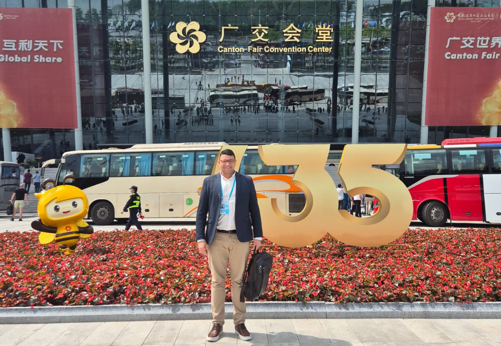
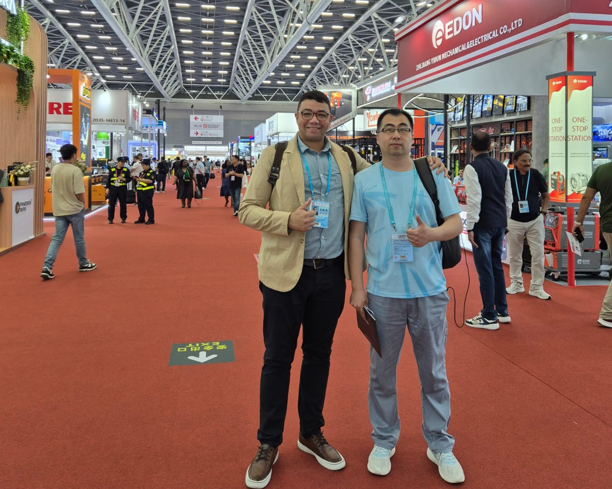
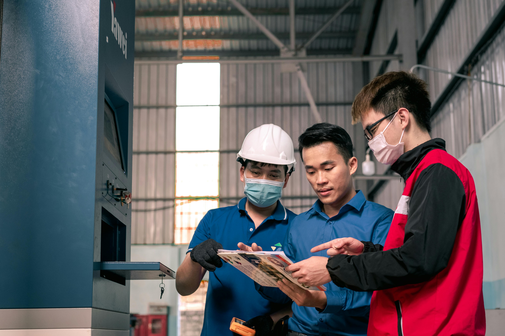
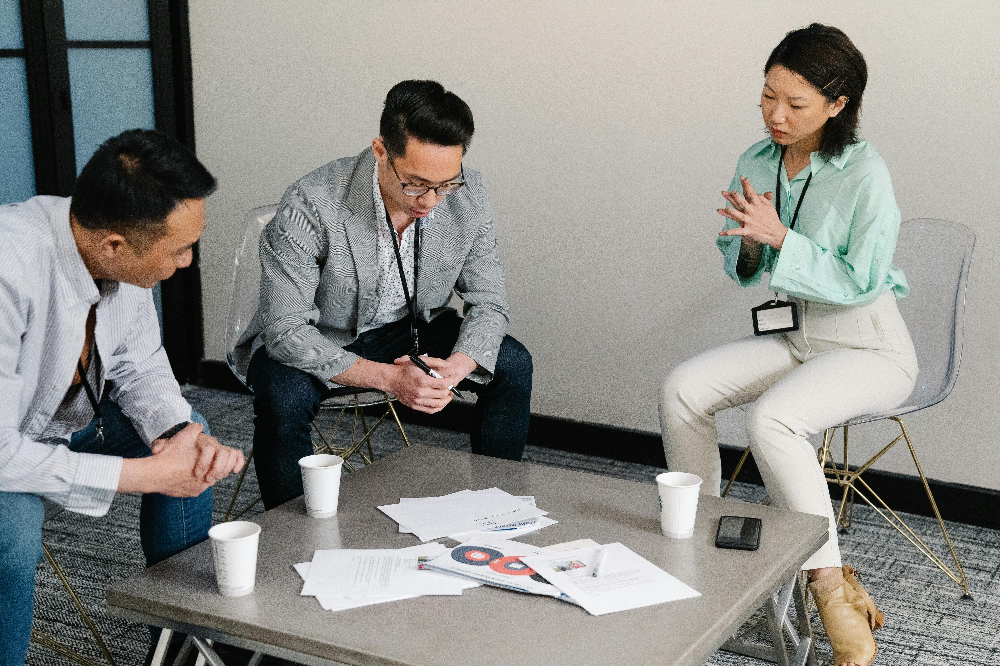
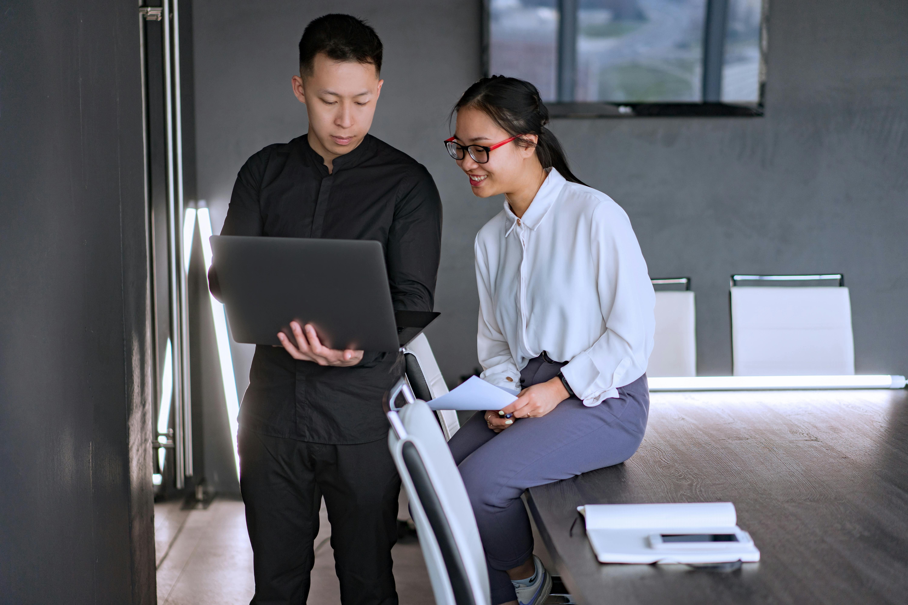

Criada para empresários que desejam expandir seus negócios com
segurança, acesso direto a fabricantes e visão global.
Mais do que uma viagem internacional, trata-se de uma experiência
estruturada para geração de oportunidades reais.


A China concentra algumas das maiores indústrias globais em
tecnologia, máquinas, construção civil, eletrificação e equipamentos
industriais.
Durante a missão, os participantes têm acesso direto a:
✔ Fabricantes estratégicos.
✔ Centros industriais e polos produtivos.
✔ Novas tecnologias e tendências globais.
Também participamos da maior feira multissetorial do mundo,
a Canton Fair, realizada em Guangzhou, referência global em inovação
e negócios internacionais, como:
Reuniões privadas com fabricantes

Visitas técnicas a fábricas selecionadas

Acompanhamento estratégico da HOME
A missão é conduzida com planejamento estratégico, curadoria de
fornecedores e foco em resultado. Não é turismo empresarial.
É geração estruturada de negócios. A HOME Gestão & Negócios
Globais organiza cada etapa com foco em:
✔ Segurança
✔ Conexão direta com decisores
✔ Inteligência de mercado
✔ Oportunidades concretas de expansão
